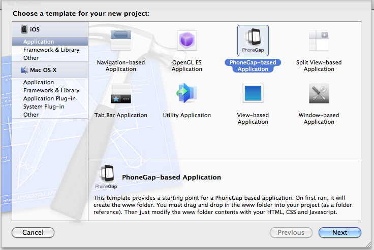
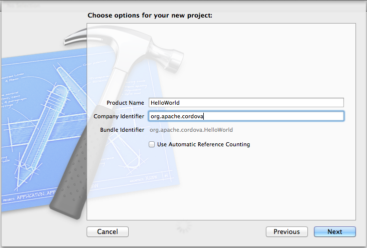
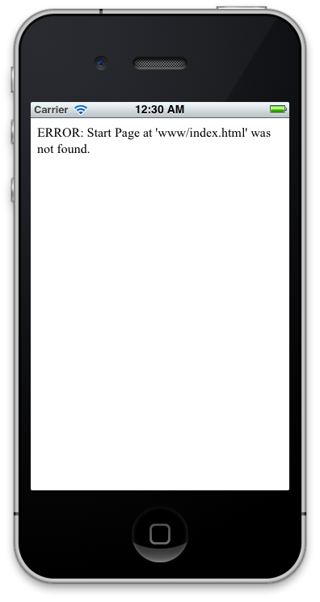
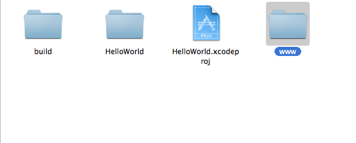
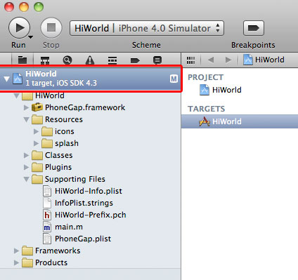
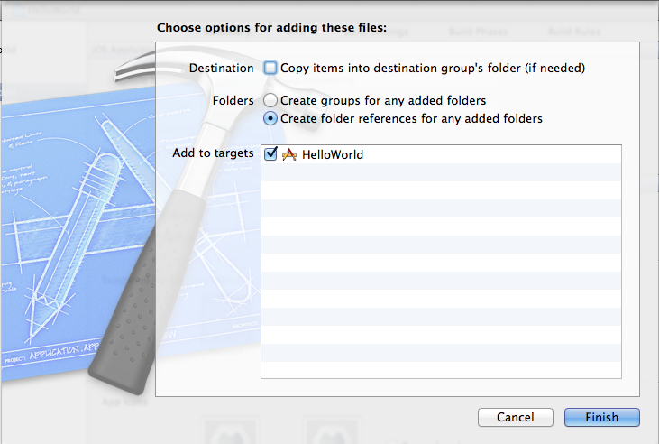
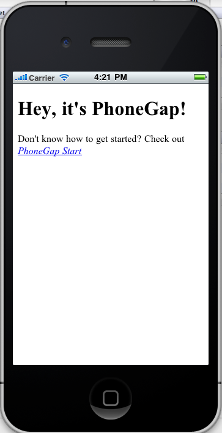

Getting Started with iOS
This guide describes how to set up your development environment for Cordova and run a sample application.
Video Tutorials:
1. Requirements
- Intel-based computer with Mac OS X Lion (10.7)
- Necessary for Installing on Device:
- An Apple iOS device (iPhone, iPad, iPod Touch)
- iOS ceveloper certification
2. Install SDK + Cordova
- Install Xcode from the Mac App Store
- Donwload the latest copy of Cordova and extract its contents. We will be working with the lib/ios directory.
3. Setup New Project
- Launch Xcode
- Select the File menu
- Select New, then New Project...
-
Select Cordova-based Application from the list of templates

- Select the Next button
-
Fill in the "Product Name" & "Company Identifier" for your app

IMPORTANT! DO NOT CHECK the "Use Automatic Reference Counting" checkbox
- Select the Next button
- Choose a folder to save your new app in
- Select the Create button, this will create your project
-
Select the Run button in the top left corner. Your build should succeed and launch in the iOS Simulator
a. You should see an error in the iOS Simulator informing you that www/index.html was not found
b. To fix this, we need to add a folder reference to the www directory into the project.

Right-click on the project icon in the Project Navigator (left sidebar) and select Show in Finder
-
In the Finder, you should see the www directory beside your project

-
IMPORTANT! Drag the www folder into Xcode 4. Don't drag the www folder into your app's folder. It needs to be dragged into Xcode 4. For example, you would drag and drop it on the highlighted red section of the HelloWorld project shown below.

- A window sheet should slide down with a few options, after the "www" folder has been dragged and dropped into the project.
-
Select the radio-button Create folder references for any added folders.

Select the Finish button
4. Hello World
- Select the folder named www in your Project Navigator in Xcode
- Select the index.html file
- Type
<h1>Hello World</h1>after the<body>tag
You can also add any associated JavaScript and CSS files there as well.
5A. Deploy to Simulator
- Change the Active SDK in the Scheme drop-down menu on the toolbar to iOS version# Simulator.
- Select the Run button in your project window's toolbar
5B. Deploy to Device
- Open [AppName]-Info.plist (where [AppName] is your application's name), under the "Supporting Files" group
- Change BundleIdentifier to the identifier provided by Apple, or your own bundle identifier. If you have a developer license, you can access and run the Assistant here and register your app.
- Change the Active SDK in the Scheme drop-down menu on the toolbar to [DEVICENAME] where [DEVICENAME] is the name of the device you want to deploy to.
-
Select the Run button in your project window's toolbar

Done!
Add more HTML, CSS and JavaScript to your www folder outside of Xcode, your file additions will be picked up automatically inside Xcode.